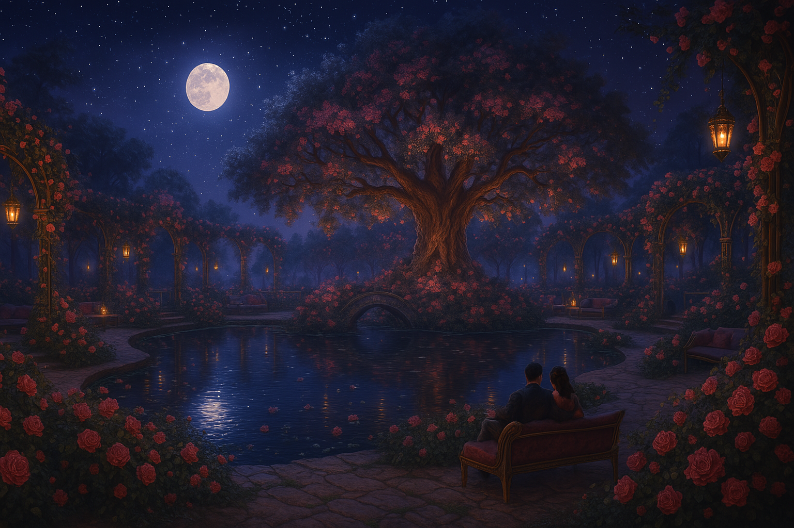
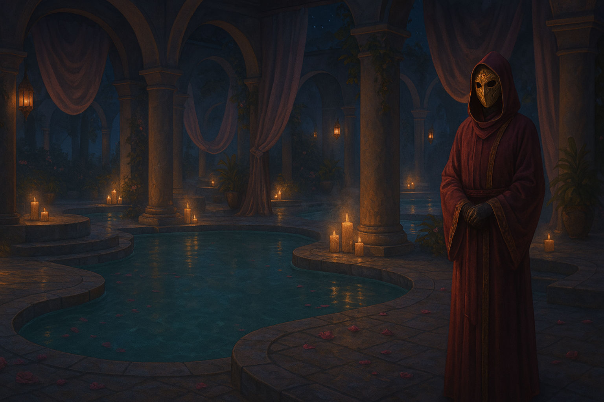
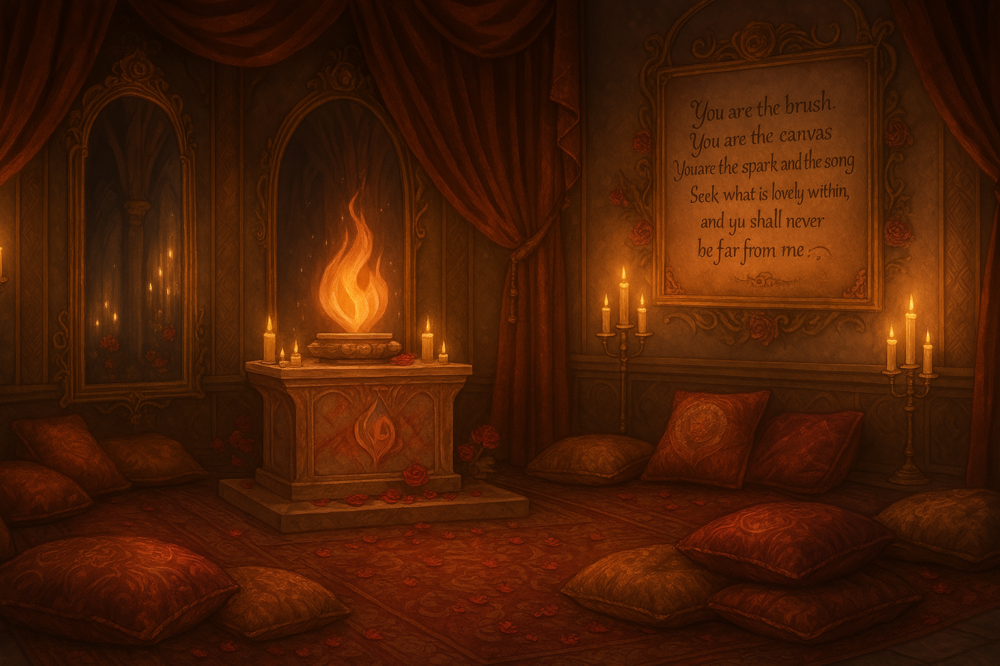

The Crimson Mirage drifts through the skies like a whispered promise — part airship, part temple, part decadent dream. Home to Nyx and their many delicious secrets, it welcomes lovers, wanderers, and worshippers of beauty alike. Behind every curtain is a mystery, behind every mask, a fantasy. A shrine to Sune, goddess of love and pleasure, the Mirage is a place where names are forgotten, consent is sacred, and indulgence is divine. Come closer, darling — the flame is warm, and the night is long.
⟡ "Love none more than yourself, but grant that love freely and without shame." — Sune Firehair ⟡
The Crimson Mirage¶
🌒 The Alley¶
 The alley is not always there, nor does it appear in the same place twice.
The alley is not always there, nor does it appear in the same place twice.
It waits in the corner of your eye—tucked between buildings that seem slightly too far apart. A narrow path of silver-grey cobblestones stretches inward, where shadows shimmer like candlelight and the world falls strangely silent. The air here is still but warm, laced with the soft scent of roses and old parchment.
Symbols begin to appear as the alley deepens—etched softly into the walls: a woman’s face framed in flowing hair, a heart embraced by flame, a rose blooming where a tear might fall. The marks are gentle but deliberate, unmistakable to those who know the goddess Sune—Lady of Love and Light.
Somewhere ahead, music hums at the edge of hearing—like harp strings played by breath. Laughter flits by, warm and fleeting. The glow of something golden spills from around a final bend.
At the end of the alley, a soft wind stirs velvet curtains and carries with it warmth, perfume, and the gentle echo of celebration. A seam of light traces the edge of a wall, where a passage has quietly opened—leading toward something radiant.
The air changes here, thick with invitation. Beyond this place… is something more.
🌠The Crimson Mirage¶
Beyond the velvet-lined passage, the alley gives way—not to another street, but to open sky.
A smooth platform of polished stone juts out from the edge of reality, hovering at the rim of the Starry Shores. The world beyond it is vast and hushed, where gravity is a suggestion and stars drift like dandelion seeds through infinite twilight. Wisps of nebulae glow faintly above, painting the sky with lavender and gold.
Floating just beyond the edge—moored by nothing visible—waits a vessel unlike any other.
The Crimson Mirage.
A ship, and yet not. A palace. A dream. Its hull curves like the petal of a rose unfurling, carved from deep redwood veined with threads of gold and mother-of-pearl. Veils of translucent silk trail from its arches and balconies, rippling gently despite the absence of wind. Candles flicker in lanterns shaped like hearts and roses, casting warmth across its length in soft, flickering reds and ambers.
The figurehead at its prow is unmistakable: the serene face of a woman with flowing hair of sculpted flame, her gaze lifted skyward in devotion. Sune's blessing is carved into every beam.
A sweeping staircase descends from the ship’s side to meet the stone—carpeted in crimson velvet, lit by floating candelabras that hover like patient stars. The scent of jasmine and wine hangs in the air, and music spills gently from the open doors above—harp, violin, and laughter.
There is no crew in sight. No moorings. And yet… the ship waits.
ğŸ The Hall of Masks¶
Past the golden doors, the world softens into candlelight.
The Hall of Masks curves gently in both directions, its walls lined with recessed alcoves—each bearing a single mask, waiting in quiet invitation. The air is warm and perfumed, like rose petals steeped in honeyed wine. Music murmurs through the walls, never loud, never still—flute, harp, a distant hum.
Just beside the entrance, veiled behind carved wooden doors gilded in crimson and gold, rests the Masked Vault—a private chamber where returning guests may store their chosen faces, ready for another night.
Polished marble underfoot reflects every flicker of flame. Velvet drapes hang in sweeping folds from the ceiling, stitched with tiny golden flames—the sacred emblem of Sune. Along the far wall, a mural stretches the length of the hall: lovers in every form, artists painting in ecstasy, a dancer mid-spin beneath a burning sky. Above them all, Sune’s flame-haired visage watches with an open smile.
At the heart of the hall stands a single SIM—an elegant figure in flowing crimson robes, face hidden behind a porcelain half-mask kissed by gold. They do not speak unless approached. And when they do, their voice is gentle, practiced, full of reverence.
“Close your eyes,†they say. “Breathe. Let your heart choose. When you open them… your mask will be waiting.”
Some masks are delicate as spider silk. Others are feathered, jeweled, carved from bone or wood. No two are the same. Each whispers of identity, of possibility, of stories yet unlived.
At the far end of the corridor, the Mirage opens into deeper mysteries—soft light spills from branching hallways, each one leading somewhere new.
🖋️ When your eyes open and your mask finds you, you may describe it in this channel. You are also welcome to include an image, should one appear to you. 🗠Wish to keep your mask?
If you've found a mask you'd like to wear again, you may place it in the Masked Vault for safekeeping.
Rules of the Crimson Mirage¶
To preserve the sanctity, pleasure, and freedom of all aboard, please follow these rules:
-
Weapons: Weapons may be brought aboard but must never be drawn or brandished. Doing so ends your invitation.
-
No Harmful Magic: Use magic for art, pleasure, entertainment, or growth—never destruction or harm.
-
Private Spaces: Do not enter private rooms without an invitation. Respect the space of others.
-
Public Decorum:
- Masks are required in all public areas. Names are optional—the mask is your invitation.
- No nudity in public. Bathing suits or elegant coverings are expected in shared spaces like the Petal Baths.
-
Affection should remain respectful. If things escalate, move to a private room. Fade to black for NSFW scenes.
-
Cheating in Games: Do not cheat to win. Play fair. Cheating to lose, if playful and consensual, is sometimes allowed.
-
Respect and Consent: The Mirage honors freedom, pleasure, and reverence. All actions must be mutual and freely chosen.
-
Interaction & Boundaries:
- Consent is active and mutual. Say, “I offer a kiss,†not, “I kiss them.”
- Boundaries are sacred. No one is ever obligated to engage. Respect each other’s space and choice.
*** Rooms ***¶
🔗 The Masked Vault ⟡ If you've found a mask you'd like to wear again, you may place it in the Masked Vault for safekeeping.
ğŸ› ï¸ The Gilded Drafting Room
⟡ Workshop for designing and discussing the workings of the Mirage.
🶠The Veilcourt
⟡ A quiet salon for music, flirtation, and subtle connection.
💉Future Clinic - Ran by Droplet
🥂 The Velvet Table
⟡ A masked fine-dining salon where pleasure and poetry mingle.
💃 The Blushspire
⟡ A casino and performance hall of dancers, games, and desire.
🌹 The Bloom Eternal
⟡ A sacred rooftop garden of roses, shrines, and soft indulgence.
🛠The Petal Baths
⟡ A moonlit spa with veils, mirrors, and warm, enchanted pools.
💖 The Heart of Flame
⟡ Sacred chamber of worship, vulnerability, and Sune’s flame.
⟡ 📚 The Chamber of Teachings
⟡ A quiet sanctum for studying Sune’s love, beauty, and sacred philosophy.
🛌 The Mirror Suites
⟡ Private rooms for retreat, romance, or rest.
📜 The Guestbook
⟡ Leave a poem, token, or memory. All offerings are welcome.
Some rooms link to others, such as 🛌 The Mirror Suites.
🗠The Masked Vault¶
At the far end of the Hall of Masks, nestled behind a velvet curtain embroidered with a single golden flame, lies the Masked Vault—a quiet chamber set aside for memory, identity, and return.
Along the walls rest carved cubbies and glass cases, each one softly lit and marked only with symbols chosen by the guest who placed their mask within. No names are used here. Only intention. Only feeling. Only what was offered freely.
The air is cool and still. Incense lingers—jasmine, myrrh, something like ink and moonlight. A single masked attendant stands at a nearby podium, silent unless addressed. With a word or a gesture, they will help retrieve a stored mask, or gently place a new one into the vault.
There is no ceremony required. But many pause here—if only for a breath—to acknowledge the weight of what they leave behind.
ğŸ To store a mask, simply describe it in this thread. You may also include an image, should one appear to you. Your mask will be here when you next return.
ğŸ› ï¸ The Gilded Drafting Room (Public – Helpers)¶
The air here is still, but not idle. It smells faintly of parchment, melted wax, and the metallic tang of conjured ink. This is a place of blueprints and backbone, where the beauty of the Mirage is shaped before it’s ever seen.
Shelves line the walls, stacked with scroll tubes, ledgers, enchanted drafting tools, and coils of illusion-thread used for modeling new rooms in three dimensions. A large central table dominates the space—its surface cluttered with sketches, diagrams, and floor plans marked with runes of light.
Gilded trim decorates the otherwise austere furnishings: utilitarian chairs, simple stools, and flat storage drawers built into the floor and walls. Function rules here, softened only by the elegant hand that guides it.
A few staff move with quiet purpose—masked attendants in work aprons and half-cloaks, tending to arcane drafts, sorting through labeled shelves, or updating glowing wall diagrams that shift as the Mirage evolves. A chalk panel glows gently at the side, listing current works in progress, upcoming changes, or requests submitted by those who maintain the ship’s many moods.
This room is not meant to dazzle. It is meant to build. Every petal of velvet, every step of marble, every sacred curve of the Heart of Flame was first whispered into being here.
🗝️ Guests are free to view, but only staff and trusted hands may leave marks upon the table.
🶠The Veilcourt¶
The sound hits first—soft, silken, impossible to place. A harp? A voice? The room hums like it’s remembering a song you once loved.
The Veilcourt opens in a wide arc, ringed by columns draped in translucent fabric that shifts color with the hour and mood. In the center rises a low circular stage, its surface polished to a warm sheen, bordered by candlelight. The stage is rarely empty. Staff musicians in gilded masks play from recessed alcoves or stroll slowly between tables, their music shaping the tempo of the room—sometimes laughter, sometimes longing.
Small velvet booths ring the edges of the space, perfect for whispered conversation, flirtation, or soft stillness. Glasses clink. Laughter bubbles. Someone hums along with the melody as it drifts through the air. In this room, the line between performance and presence is thin.
The lighting responds to unseen cues—growing richer, deeper, or brighter depending on the moment. During events, it blooms into color and motion. On quiet nights, it folds itself into candlelight and shadows.
All guests wear masks here. It is the law of the Mirage—an offering of anonymity, mystery, and grace. One does not bare their name in the Veilcourt—only their rhythm.
The staff do not interrupt. They are always nearby. Offering wine, adjusting sound, guiding mood without words. And if a guest feels the pull of the music, they may step onto the stage themselves—for a song, a dance, or simply to be seen.
🼠This is a place for hearts to echo. For music to flirt with silence. For masks to smile without shame.
🥂 The Velvet Table¶
The scent of warm bread, sweet fruit, and spiced wine greets every guest like an embrace. Rich with candlelight and slow laughter, The Velvet Table is the Mirage’s heart of indulgence—where hunger is never just for food, and every flavor might speak to the soul.
Round tables are spread across the polished stone floor, each draped in deep velvet and crowned with flickering rose-glass candles. Along the edges of the room, half-curtained dining cubbies offer privacy for those who desire something more secluded—whether romantic, conspiratorial, or simply quiet. The ceiling above glimmers like a painted dusk sky, shifting in hue and starlight depending on the hour.
A menu is available, inked in flowing calligraphy. But many guests forgo it, instead telling a masked server how they feel. The chefs—rarely seen—craft meals that match emotion: a yearning may return as sea-salted honey cake; a thrill may come with wine that shimmers when poured. Every dish is a dialogue.
Depending on the evening, soft music, spoken poetry, or dreamy storytelling may drift through the space. Sometimes a performance holds the room in reverent silence. Other nights, laughter spills between tables like wine.
Staff glide through the room in flowing crimson and pearl, attentive but never intrusive. Guests are welcome to approach others, but always with care—ask before you join, respect the rhythm already there.
Some offer names. Others do not. All wear masks, as the ship requires.
🷠Here, every meal is a memory in the making. Every conversation, a course unto itself.
🥀 The Velvet Table Menu is available by request—or simply tell the staff how you feel, and the chef will prepare a custom five-course meal inspired by your emotions.
💃 The Blushspire¶
 The air in the Blushspire crackles with possibility. A dancer’s laugh echoes through velvet halls. Dice clatter like thunder over silk. A promise flickers in candlelight—unspoken, yet felt.
The air in the Blushspire crackles with possibility. A dancer’s laugh echoes through velvet halls. Dice clatter like thunder over silk. A promise flickers in candlelight—unspoken, yet felt.
This is a space for games—of chance, of skill, of desire. Masks are required. Names are optional. Coin has no meaning here. Wagers are made in whispers, kisses, poems, favors, memories… whatever the bettor dares to offer from their own heart.
“I place a secret in the pot.†“I wager a kiss I’ve been saving for someone who hasn’t arrived yet.†No one may bet what isn’t theirs. And one may cheat—but only to lose.
Tables of all shapes and sizes are scattered across the floor: some surrounded by laughing crowds, others tucked into shadows for more intimate play. Staff in trailing crimson and gold tend to each station, offering wine, adjusting light, and occasionally stepping in to play when asked. Above, a domed ceiling glitters with starlight and slow-turning chandeliers, their chains shaped like entwined roses and blades.
A raised platform near the center hosts performers—masked dancers, illusionists, singers, or sacred provocateurs, depending on the night. The performances blend with the room’s rhythm, enhancing the games rather than distracting from them.
Along the far edge of the chamber, curtained archways lead to private salons—reserved for more focused games, one-on-one challenges, or encounters meant to unfold away from the crowd.
🲠Here, every game is a seduction. Every wager, a mirror. And every victory... only as sweet as the price you were willing to risk.
You can find a list of suggested games here: 🲠Blushspire House Games
🌹 The Bloom Eternal¶
 The night sky stretches endlessly above, scattered with stars that drift as if caught in a lover’s breath. Beneath them, the deck of the Mirage has become a garden—soft, vast, and impossibly alive.
This is The Bloom Eternal, a sacred rooftop where roses bloom in endless variety: blushing pink, deep crimson, radiant gold. Vines climb carved trellises. Lanterns sway gently in the astral breeze, casting warm halos through veils of hanging jasmine and moonlit mist.
At the garden’s center lies a wide, still pond, its surface mirroring the stars above. In the middle, on a small stone island, rises a great oak tree—its bark touched with silver, its leaves edged in rose-gold. Known as Sune’s Embrace, the tree is said to have grown from the heartwood of the first love ever blessed by the goddess. No staff tend it. No one speaks while crossing its bridge unless invited by silence.
Around the pond, the garden unfolds in meandering paths, clusters of couches, and soft grassy nooks designed for closeness. Couples lean into each other under rose-draped arches. Groups laugh beneath floating lights. Petals fall without end, never wilting.
Staff pass through with trays of wine, fruit, or cushions, never interrupting. Their presence is gentle, ghostlike—a reminder that care exists, even in stillness.
Masks are worn here, as in all public places aboard the Mirage. But in this garden, it is the heart that speaks first.
🌙 Come to rest. To flirt. To remember. To bloom. The night never ends here… and love is always in season.
🛠The Petal Baths¶
 Steam curls through archways like a beckoning touch, perfumed with rosewater, cedar, and soft citrus. The Petal Baths unfold in a gentle maze of stone paths and draped silks, each turn revealing a new hidden oasis—a warm pool, a fragrant sauna, or a quiet space built for stillness and blooming closeness.
Dozens of individual pools shimmer beneath floating lanterns and trailing blossoms. No two are the same. Some glow with minerals that soothe aching limbs. Others are chilled and clear as moonlight. A few carry the faint shimmer of enchantment—designed to stir joy, calm the mind, or soften the heart. Staff wait nearby to guide guests toward waters that suit their spirit.
Around the edges of the room, veiled alcoves and curtained chambers allow space for private soaking, whispered conversations, or silent reflection. Gentle music plays somewhere beneath the sound of flowing water—harp strings, wind chimes, and the occasional distant laugh.
Mirrors—framed in gold and soft petals—line the walls at intervals. Some are large, others no more than hand-sized, but all reflect more than just the surface. They are sacred to Sune’s worship: instruments of beauty, honesty, and divine indulgence.
Bathing suits and masks are required in all public pools and saunas.
Staff move softly, offering oils, towels, refreshments, or simple companionship. They never linger unless invited.
🪷 This is a space for comfort, reflection, and connection. Let the waters hold what words cannot.
💖 The Heart of Flame¶
 The air here is warm—not with heat, but with presence. A hush fills the room, woven from candlelight, rose incense, and the soft rustle of silk. This is the Heart of Flame, the sacred soul of the Crimson Mirage.
At the far end of the chamber stands a raised altar, carved from rose-gold marble and veined with crimson quartz. It glows gently with living flame that never consumes, only warms. Offerings rest at its base—petals, poems, portraits, polished stones—each a reflection of the giver’s love, longing, or devotion.
Around the room, mirrors bloom like windows—tall, round, oval, all framed in gold, pearl, or flowering metalwork. They reflect not only faces, but truths: strength, softness, desire, doubt. To look is to listen.
Plush cushions and embroidered throws cover the floor, arranged in intimate clusters and quiet corners. Guests may sit, sprawl, curl, or lean—alone or entwined. Here, comfort is sacred. Rest is reverence.
On one wall, a delicate plaque bears Sune’s words, etched in curling script:
“You are the brush. You are the canvas. You are the spark and the song. Seek what is lovely within, and you shall never be far from me.”
Some come here to worship. Others come to remember their own beauty. Still others come to find their muse again when her voice has grown quiet.
Behind a half-curtained arch, a soft glow leads into 📚 The Chamber of Teachings —a smaller space for those seeking scripture, stories, or the philosophy of Sune’s love.
🔥 This is a place for sacred stillness, radiant inspiration, and beauty in all its forms—flawed, fierce, and divine.
***( In order to bring Sune to The Starry Shores, we need 25 people with a piety of 10 or higher following Sune. For now, to track it, if you follow Sune and are helping, please make a post here with your character name and Piety level, you can then just update that post as needed. Thank you! It is not a requirement, but as soon as we meet the level I would like to run to Ciel to get us on the books and unlock the piety rewards! 😄 ) ***
📚 The Chamber of Teachings¶
Through a softly veiled archway at the back of the 💖 The Heart of Flame lies a smaller room, warm with lamplight and hushed reverence. The Chamber of Teachings is no cold library. It is a sanctuary for those who seek to understand Sune not only in beauty, but in wisdom.
Shelves of lacquered rosewood curve along the walls, holding scrolls, bound tomes, and devotional journals—many hand-written by past visitors or priests who once wept here in joy. Each volume is tied not only to doctrine, but to experience: the philosophy of love, the art of beauty, the practice of adoration.
Cushions and low tables are scattered throughout the room, lit by lanterns that flicker gently in hues of pink and gold. A few larger mirrors line the corners, turned slightly inward—offering reflection to those who study not only with their eyes, but with their hearts.
On a pedestal in the center, open to any hand that seeks it, rests a Living Book—a sacred tome enchanted to reveal different passages depending on the seeker’s state of heart. Some read of first love. Others, loss. Some find poems. Others, fire.
Staff do not enter unless invited. The space is for seekers, lovers, and creators—those who come not just to worship, but to understand why they love, and how they might do so more fully.
✨ Here, the goddess does not whisper. She waits. And when you are ready… she speaks.
Books, scrolls and teachings¶
📖 From the Velvet Rose Codex 💋 The Tenets of the House of Beauty 🪠The Mirror and the Flame 🗡️ The Thorn That Dared 🦢 The Swan Who Was Always Lovely 🌳 The Tree and the Bloom 🪶 When Love Has Wings
🛌 The Mirror Suites¶
The hallway is silent but never cold.
Candlelight flickers along velvet-lined walls, and your own reflection follows in dozens of gilded mirrors—tall, round, veiled, fractured. Some show only your mask. Others seem to reveal something deeper: a glance, a curve of thought, a moment you don’t remember living. This is no trick of magic. The mirrors simply see you.
Doors line the corridor on both sides, each one unique. Carved wood. Painted glass. Iron filigree. Curtain of silver chains. No two suites are the same, and no names are written on any of them—only symbols, whispers, or sigils known only to those who belong there.
Some doors are open. Most are not. Music, perfume, or laughter might drift from behind one, while another exudes nothing but stillness and candlelight.
These are the Mirror Suites—private sanctuaries for retreat, romance, and rest. Within each room, intimacy takes the form the guest most needs: a lover’s hideaway, an artist’s refuge, a sacred solitude, or something else entirely.
✦ Guests may request a suite of their own. Simply speak with the Mirage’s owner, and a space will be shaped to suit the soul that asked.
Residents:¶
📜 The Guestbook¶
A simple stand of carved moonwood rests beneath a canopy of lanternlight—unadorned, save for a blooming crimson rose etched into its surface. Beside it lies a quill that never runs dry, and a soft-bound tome filled with pages that never seem to end.
This is the Guestbook of the Crimson Mirage.
Some entries are long. Some are only a few words. A poem. A whisper. A sketch of a mask never worn. Others tell of a night not soon forgotten, a lesson learned, a kiss left unclaimed. No two pages are alike—but all are welcome.
There is no expectation of style, or length, or even coherence. What matters is that it is yours. A thought. A feeling. A moment you wanted to offer back to the Mirage, and to those who may someday read your words.
Staff occasionally leave pressed flowers between entries, or seal heartfelt notes in wax. The book responds in small ways—warmth to the touch, the faint scent of roses, a flicker of starlight at the edge of a page. But it does not judge.
🖋️ You are invited to leave a message—be it memory, musing, suggestion, or sacred little truth. This space belongs to all who walk the halls of the Mirage.
🌸 Sanctum of Many Rooms (Nyx, alters, and invited only)¶
There is no visible door—only a smooth curve in the wall where candlelight seems to shimmer too long. Only those invited feel the gentle tug of the warded veil, and even then, the threshold does not open so much as recognize them.
Inside, the space is impossibly quiet. Not silent, but still—like a held breath, or the moment between heartbeats.
The Sanctum of Many Rooms does not obey the rules of shape or architecture. Some days it is a lush sitting room with a velvet chaise beneath a skylight of drifting stars. Other times, a pale corridor opens into alcoves shaped for dreaming, healing, or simply being. Each time the space is entered, it seems to know what its keeper—or her facets—most need.
The walls shift in tone: dark and grounding one hour, soft and blush-tinted the next. A writing desk always appears where it is wanted. A fireplace lights when someone aches. A mirror appears when someone forgets their face. Sometimes it rains in here. Sometimes it doesn't.
At its center is a simple altar of crystal and shadowglass—unmarked by holy symbol, yet quietly sacred. Not to a goddess. To the self.
This is not a space of performance. It is not for masks. Here, Nyx is simply Nyx. And so are her selves, should they wish to be.
🌙 Those granted entry find that their presence alone shapes the space around them. But none may enter uninvited, and the Sanctum always remembers who belongs.
-# comes in and moves to one of the shelves that look out over the room, they clean an area and put their new gift up there, along with a little carved sign that says 'Do not touch! This was a gift from Zylar!'
- fabled Ciel Plush, Poster Boy of the Starry Shores, and cute to boot. They say that the first time you hug him, you feel a sense of safety and warmth overcome you. (Disclaimer: Not affiliated with Ciel the adventurer.)_